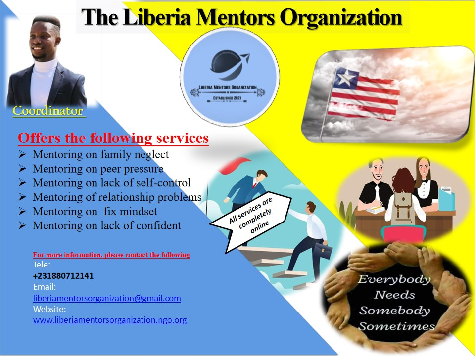

Overview
Purpose
The purpose of mentoring programs is to help connect knowledge seekers (mentees) with knowledge bearers (mentors). These mentee-led relationships provide mentees the opportunity to connect in meaningful ways with someone whose past experience can help them navigate careers and life. Mentoring is one of the fastest and most authentic ways to transfer knowledge within an organization but also offers additional benefits for both the mentor and mentee. Let’s take a deeper dive into the purposes behind running a mentoring program, and how you can optimize them for better participant outcomes (including, but not limited to, greater career performance for your mentees) A mentor has an important role to play in the mentoring relationship across every age range, from youth mentoring to mentoring employees in the workplace. A mentor is (generally) a more experienced and knowledgeable individual who is tasked with knowledge transfer in formal mentoring programs. However, mentoring relationships can also take place in an informal setting. In most mentoring relationships, the mentor helps the mentee:
- Make better career decisions
- Gain new life perspectives
- Develop skills that assist in career or personal development
- Shaft his/her perceptions about life and people
Audience
- Employees
- Businessmen and women
- Students and fix-mindset people
- Employers
- Leaders of every Institution
Branding
Website Logo
Style Guide
Color Palette
Palette URL:
https://coolors.co/396e94-e7c24f-bd7930-932f10-381d2a-aabd8c https://coolors.co/396e94-e7c24f-a43312-381d2a-aabd8c| Primary | Secondary | Accent 1 | Accent 2 |
|---|---|---|---|
| [#396E94] | [#E7C24F] | [#A43312] |
Typography
Heading Font: [algerian]
Paragraph Font: [Times New Roman]
Normal paragraph example
Mentoring is a reciprocal and collaborative at-will relationship that most often occurs between mentor and mentees for the purpose of counseling ones to develop talents, growth mindset, learning, and career development. The Liberian Mentors Organization is often mentee counseling, and there is an emphasis on organizational goals, culture, career goals, advice on professional development, and work-life balance. We often act as role models and sounding boards for our mentees and provide guidance to help them reach their goals.
Colored paragraph example
Mentorship is very good for family, youth, older adults, coworker, love ones and Government worker
Navigation
Site Map
Wireframes
Home